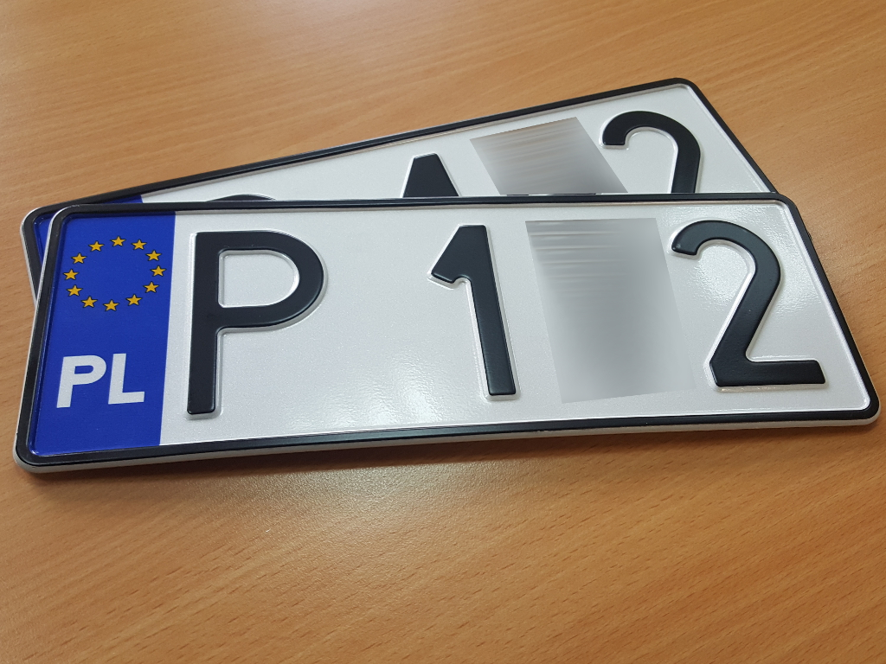

Zmianny w rejestracji aut
20.12.2019 | 01:12:55 | Dawid Karpczak
Od 1 stycznia przyszłego roku za spóźnienie w przerejestrowaniu i wyrejestrowaniu samochodu będzie grozić tysiąc złotych kary. Nowe przepisy właśnie pojawiły się w Dzienniku Ustaw.
 Od 1 stycznia przyszłego roku za spóźnienie w przerejestrowaniu i wyrejestrowaniu samochodu będzie grozić tysiąc złotych kary. Nowe przepisy właśnie pojawiły się w Dzienniku Ustaw.
Podczas prac parlamentarnych nad zmianami zdecydowano, że obowiązek ten nie będzie dotyczył nowych samochodów, które będą traktowane jako towar handlowy. Oznacza to, że wysokimi karami nie będą musieli się przejmować dealerzy. Nowe przepisy będą jednak bardzo dużym problemem dla importerów i sprzedawców samochodów używanych, co można uznać za swego rodzaju niesprawiedliwość.
W Polsce istnieje już obowiązek informowania starosty o sprzedaży samochodu, ale jest fikcją, bo jeśli tego nie zrobimy, to tak naprawdę nie grozi nam żadna kara. Na zmiany nalegała także Komisja Europejska, która zarzucała Polsce, że nie wdrożyła dyrektywy w sprawie pojazdów wycofanych z eksploatacji. Szacunki mówią, że z 24 milionów zarejestrowanych w Centralnej Ewidencji Pojazdów pojazdów aż 6 milionów to tzw. "samochody-duchy", które co prawda istnieją, ale nie jeżdżą po drogach, a wpływają na statystyki.
Zakłada się, że taki instrument prawny przyczyni się do poprawy przestrzegania przez właścicieli pojazdów obowiązku złożenia wniosku o rejestrację, wyrejestrowanie pojazdu w określonym terminie czy też ustawowego terminu zawiadomienia o nabyciu, zbyciu pojazdu czy zmianie stanu faktycznego wymagającego zmiany danych w dowodzie rejestracyjnym - tak nowe przepisy uzasadnia Ministerstwo Środowiska.
Właściciel będzie miał 30 dni na rejestrację pojazdu od:Zakupu nowego pojazdu na terytorium Rzeczpospolitej Polskiej,zakupu pojazdu zarejestrowanego na terytorium Rzeczpospolitej Polskiej, czyli używanego z rynku wtórnego.Dopuszczenia przez organ Służby Celno-Skarbowej do obrotu pojazdu sprowadzonego z terytorium państwa niebędącego członkiem UE,Sprowadzenia pojazdu na terytorium Rzeczpospolitej Polskiej z terytorium państwa członkowskiego UE.Od 30 dni na złożenie wniosku o rejestrację ma mieć także osoba, która posiada pojazd powierzony mu przez zagraniczną osobę fizyczną lub prawną. Czas będzie liczony od dnia sprowadzenia pojazdu do Polski.
Komentarze czytelników
Przemyślenia? Reakcje?Zapraszamy do przesyłania opini na naszego maila w zakładce kontakty.Zachęcam do dyskusji w komentarzach poniżej, jednocześnie prosząc o zachowanie etykiety oraz kultury wypowiedzi.

Użytkownik 1 | 10.03.2020| 15:03:20
Świetny artykuł, zgadzam się z autorem, dużo osób nie zdaje sobię z tego sprawy.
Użytkownik 2 | 22.12.2019 | 09:12:11
Super informacje!
Użytkownik 3 | 23.12.2019 | 15:20:20
No, nie znowu coś zmieniają?!